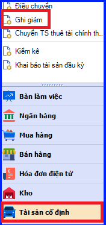
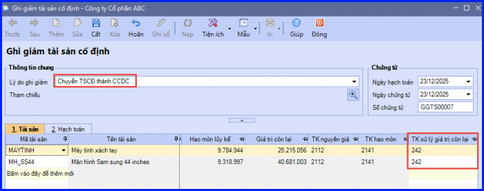
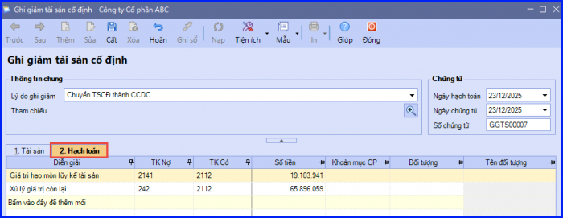
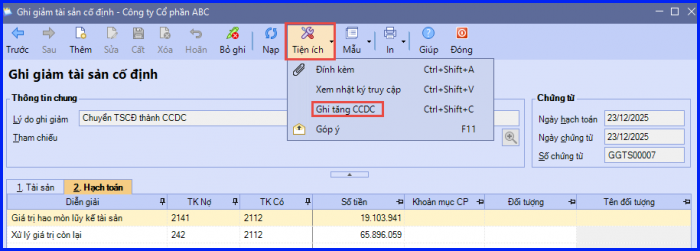
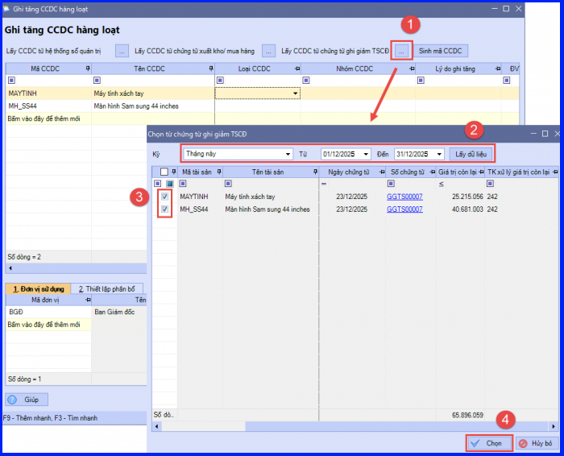
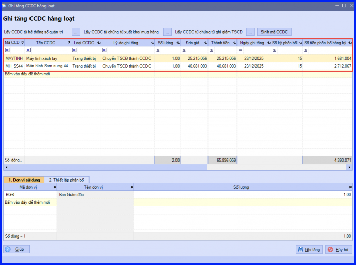
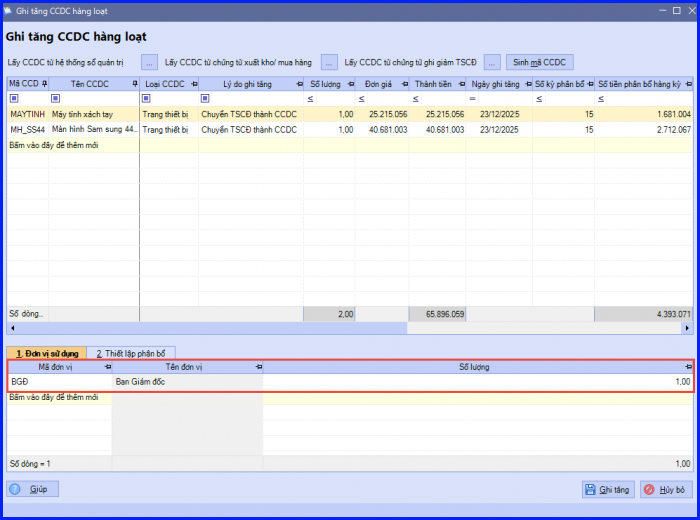

Hướng dẫn hạch toán chuyển Tài sản cố định thành Công cụ dụng cụ trên phần mềm Misa
Các trường hợp chuyển TSCĐ thành CCDC:
- Khi có quy định mới về tiêu chuẩn ghi nhận TSCĐ, TSCĐ hiện thời không còn đủ điều kiện ghi nhận là TSCĐ
- Khi có đánh giá lại đánh giá lại TSCĐ (đánh giá lại theo quyết định cơ quan nhà nước có thẩm quyền, tổ chức lại hoặc chuyển đổi hình thức doanh nghiệp) và TSCĐ không còn đủ điều kiện ghi nhận TSCĐ.
1. Các định khoản chuyển TSCĐ thành CCDC
Nợ TK 623, 627, 641, 642 - Nếu giá trị còn lại nhỏ
Nợ TK 242 - Chi phí trả trước dài hạn (nếu giá trị còn lại lớn phải phân bổ)
Nợ TK 214 - Hao mòn TSCĐ (giá trị hao mòn)
Có TK 211 - TSCĐ hữu hình (Nguyên giá)
2. Hướng dẫn thực hiện chuyển TSCĐ thành CCDC trên Misa
Bước 1: Ghi giảm TSCĐ
- Vào phân hệ "Tài sản cố định" => ấn "Ghi giảm".

- Chọn lý do ghi giảm là "Chuyển TSCĐ thành CCDC".
- Tại tab "Tài sản": khai báo thông tin tài sản bị ghi giảm, đồng thời chọn lại thông tin TK xử lý giá trị còn lại là TK 242.

- Tại tab "Hạch toán": ghi nhận bút toán ghi giảm TSCĐ do chuyển thành CCDC.

- Các bạn ấn "Cất".
Bước 2: Ghi tăng CCDC
- Trên "Chứng từ ghi giảm TSCĐ" => vào "Tiện ích" => chọn "Ghi tăng CCDC".

- Phần mềmm hiển thị giao diện "Ghi tăng CCDC hàng loạt" (nếu ghi giảm nhiều TSCĐ) hoặc hiển thị giao diện "Ghi tăng CCDC" (nếu chỉ ghi giảm 1 CCDC).
- Các bạn ấn "Lấy CCDC từ chứng từ ghi giảm TSCĐ".
- Thiết lập điều kiện để tìm kiếm chứng từ ghi giảm TSCĐ, sau đó ấn "Lấy dữ liệu".
- Tích chọn chứng từ và ấn "Chọn" => Hệ thống sẽ tự động lấy thông tin tài sản trên chứng từ ghi giảm TSCĐ sang chứng từ ghi tăng CCDC.

- Khai báo thêm các thông tin về loại CCDC, lý do ghi tăng, ngày ghi tăng, số kỳ phân bổ,…

- Khai báo lại thông tin đơn vị sử dụng CCDC (nếu có thay đổi).

- Các bạn ấn "Ghi tăng".
KẾ TOÁN DIỆU TÂM chúc các bạn làm tốt!
=============================
Nếu bạn muốn thành thạo các kỹ năng làm kế toán trên phần mềm Misa
Thì bạn có thể tham khảo "Khóa Học Thực Hành Kế Toán Trên Phần Mềm Misa" tại Công ty đào tạo Kế Toán Diệu Tâm
Trong khóa học này, bạn sẽ được dạy cách lên sổ sách, lập báo cáo tài chính trên phần mềm Misa
Chi tiết về chương trình đào tạo bạn xem tại đây nhé: Khóa học thực hành kế toán trên Misa
=============================
=============================
Nếu bạn muốn thành thạo các kỹ năng làm kế toán trên phần mềm Misa
Thì bạn có thể tham khảo "Khóa Học Thực Hành Kế Toán Trên Phần Mềm Misa" tại Công ty đào tạo Kế Toán Diệu Tâm
Trong khóa học này, bạn sẽ được dạy cách lên sổ sách, lập báo cáo tài chính trên phần mềm Misa
Chi tiết về chương trình đào tạo bạn xem tại đây nhé: Khóa học thực hành kế toán trên Misa
=============================